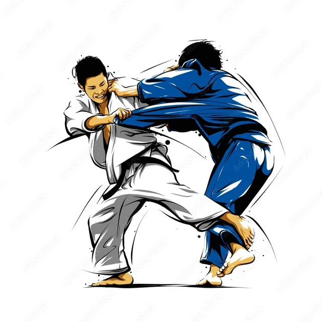

El judo es un arte marcial y deporte de combate moderno de origen japonés, creado por Jigoro Kano en 1882. Su nombre se traduce como "el camino de la suavidad" o "de la flexibilidad", ya que se basa en usar la fuerza y el peso del rival en su contra en lugar de recurrir a la fuerza bruta.
el judo competitivose divide en categorias divididas en edad , peso y genero
las categorias de edad se dividen en:
sub13 de 11 y 12 años
sub15 de 13 y 14 años
sub18 de 15, 16 y 17 años
sub21 de 18, 19 y 20 años
las categorias de peso se dividen en:
varonil -35 kg, -40 kg, -45 kg, -50 kg, -55 kg, -60 kg, -66 kg, -73 kg y +73 kg
femenil -32 kg, -36 kg, -40 kg, -44 kg, -48 kg, -52 kg, -57 kg, -63 kg y +63 kg
varonil 36 kg, -40 kg, -44 kg, -48 kg, -53 kg, -58 kg, -64 kg, -73 kg y +73 kg +81 kg
femenil -36 kg, -40 kg, -44 kg, -48 kg, -52 kg, -57 kg, -63 kg, -70 kg y +70 kg.
varonil 50 kg, -55 kg, -60 kg, -66 kg, -73 kg, -81 kg, -90 kg y +90 kg.
femenil -40 kg, -44 kg, -48 kg, -52 kg, -57 kg, -63 kg, -70 kg y +70 kg.
varonil -60 kg, -66 kg, -73 kg, -81 kg, -90 kg, -100 kg y +100 kg.
femenil -48 kg, -52 kg, -57 kg, -63 kg, -70 kg, -78 kg y +78 kg.

para ver una lista de los judokas mexicanos que han participado en competencias internacionales puedes visitar el siguiente enlace pagina oficial ifj .